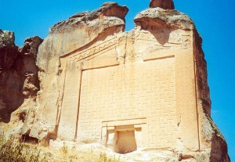
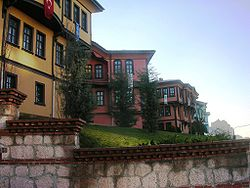

Yazılıkaya
Yazılıkaya , Phrygian Yazılıkaya, or Midas City is a village in Eskişehir Province Turkey known for its Phrygian archaeological remains and inscription mentioning Midas in Eskişehir Province Turkey known for its Phrygian archaeological remains and inscription mentioning Midas The ancient remains are sometimes called the Midas Monument or Midas City and were formerly identified as the tomb of Midas
Odunpazarı
Odunpazarı, is a historic district of Eskişehir Province in the Central Anatolia region of Turkey. Odunpazarı is one of the central districts of Eskişehir along with the district of Tepebaşı.
Kurşunlu Mosque

Kurşunlu Mosque and Complex is a 16th-century Ottoman mosque and its social complex in Odunpazarı district of Eskişehir The mosqe and the complex were commissioned by the Ottoman vizier Çoban Mustafa Pasha, and were built between 1517 and 1525.